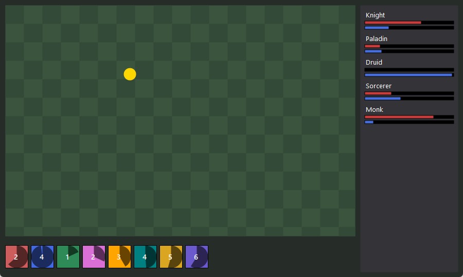
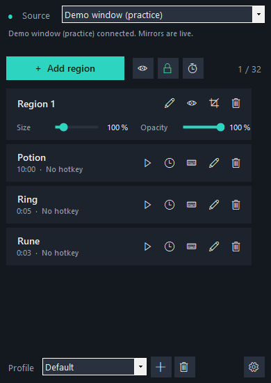

Live mirrors
Resize them, fade them, give them a highlight border. They follow the source in real time.
Free and open source for Windows 10 and 11
Echo HUD shows live copies of parts of a window in small floating windows. Draw a box around your cooldowns, your party list or a status bar, and put the copy next to your character so you never have to look away.
Not affiliated with, approved or endorsed by CipSoft or BattlEye. Use at your own risk - read why.

Windows already knows how to draw a live miniature of any window - that is what you see when you press Alt+Tab. Echo HUD asks Windows for the same thing, cropped to the rectangle you chose.
The game window, an OBS windowed projector, or the built-in practice window for trying things out.
The source dims and a magnifier follows your mouse. Drag over the part you want. Hold Shift to pick several.
Drag the mirror where you want it and press Lock. It loses its frame, and clicks pass straight through it.
Windows does all the drawing, on the graphics card. Echo HUD never receives the picture, so there is nothing to capture, analyse or lag.

Resize them, fade them, give them a highlight border. They follow the source in real time.
Pick each health bar separately, or box two rows and press R to repeat the spacing down the list. Nothing shows between them.
A magnifier while selecting, and arrow keys afterwards to move or resize the mirrored area one pixel at a time.
Mirrors click into place beside each other. Shift+drag moves a group, Ctrl+drag moves everything.
One layout per character or screen setup, saved automatically. Export a layout to share it.
Hotkeys to lock and to show or hide, a notification-area icon, and an option to show mirrors only while the game is in front.
English, Español, Português and Polski.
One 150 KB file, no installer. About 5,000 lines of commented C#, one topic per file.
For anything with a long cooldown, add a timer and give it a hotkey. Press the hotkey when you use the item; the timer counts down, then tells you how long it has been ready.
Try it: click a timer. (The real ones are started with a hotkey.)
A timer is a stopwatch, not a cooldown reader. It cannot know when you used an item, because Echo HUD does not watch the game or your keyboard. That is deliberate.
You do not have to take this on trust: one short file lists every system call the program makes.
Echo HUD is built to stay clearly on the display-only side of the line. Even so, it is not approved or endorsed by CipSoft or BattlEye.
Tibia Customer Support was asked about the mirroring tool and answered that it does not provide an unfair advantage and that its use is tolerated - adding that this is not an official endorsement and that any problem is entirely at the player's own risk.
Asked later about the features added since (such as the timers), they answered that they do not assess or approve individual third-party programs or features. BattlEye has not commented.
If that risk is not acceptable to you, do not run it alongside the game.
Read the full safety notes
A single EchoHUD.exe, built by GitHub's own machines
from the public source. It is not signed, so Windows shows an
"unknown publisher" warning the first time.
Download the source, double-click build.bat, press
Enter. It uses the compiler that is already part of Windows - nothing
to install, about a minute.
Project status: complete. Version 1.2.0 is the final planned version; no further development is planned. The code stays public under the GPL-3.0, and you are free to fork it.